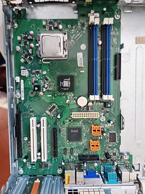
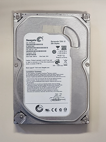
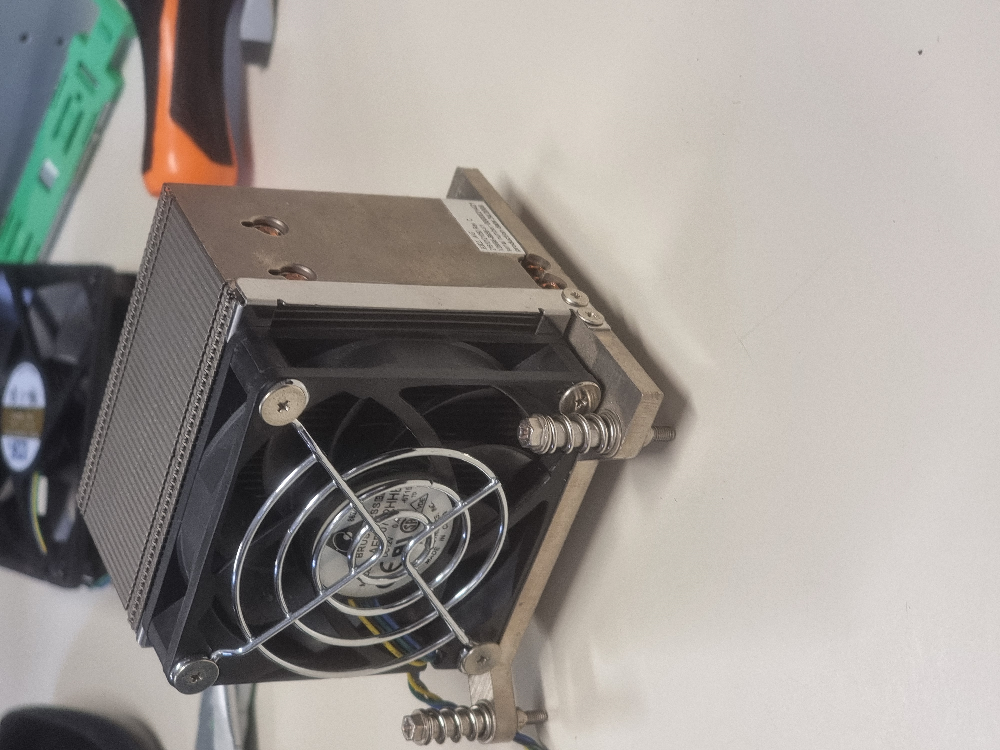
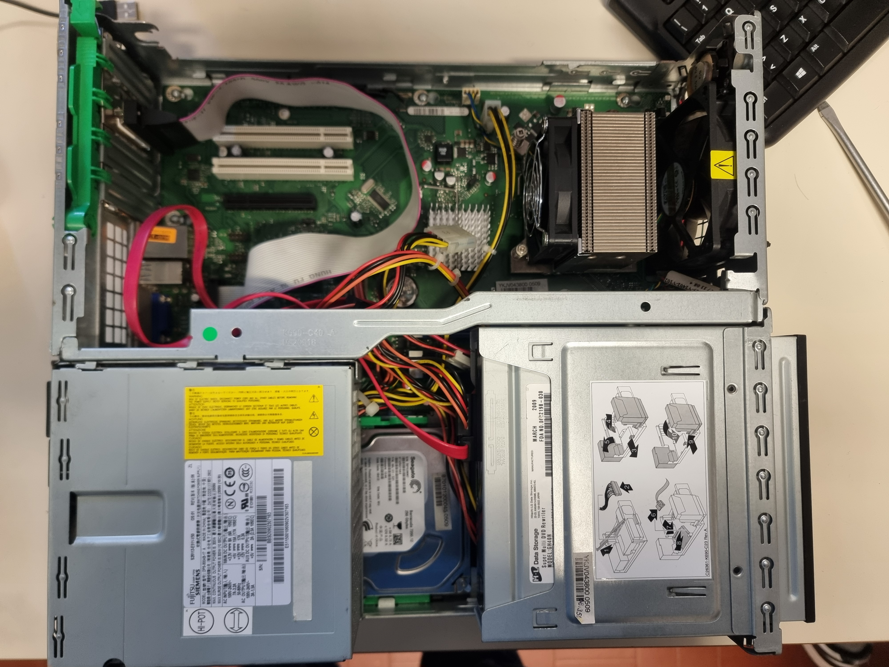
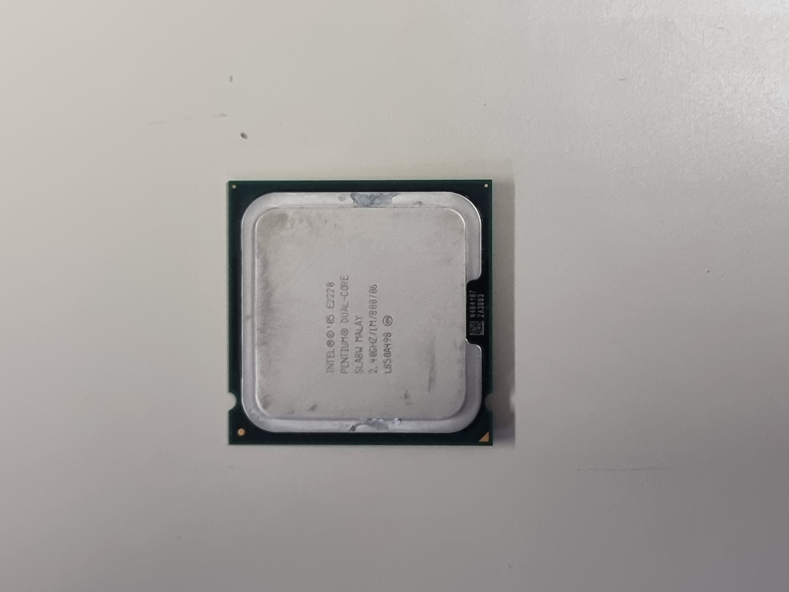
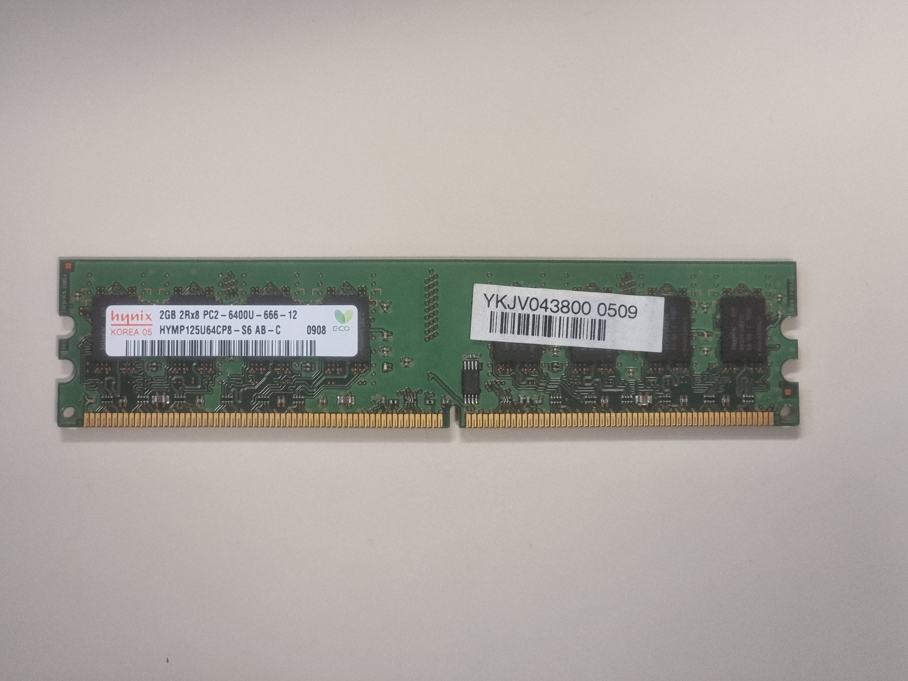
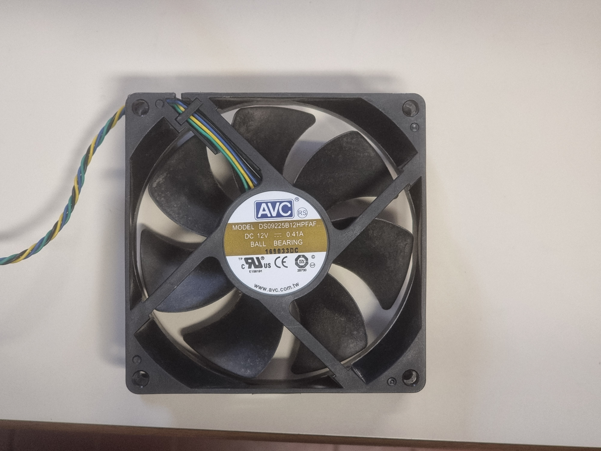

MONTA & SMONTA
Durata: 4 ore (1 ora teoria + 2 ore pratica + 1 ora test finale)
L'obiettivo del progetto consiste nell'avvicinare gli studenti al mondo hardware dell'informatica.
Teoria: lezione introduttiva in cui sono state illustrate nel dettaglio le componenti di un PC fisso: scheda madre, CPU, RAM, alimentazione, scheda video e la memorizzazione dei dati. Lezione utile per comprendere il funzionamento delle parti del computer.
Pratica: si è messo in atto ciò che si è appreso durante la lezione teorica. Come si evince dal nome del progetto, si doveva smontare un vero e proprio computer desktop e analizzare le componenti di cui è composto. In un momento successivo le parti sono state montate correttamente e per verificare il montaggio il PC si doveva accendere e avviarsi senza problemi.
In fine si è svolto un test finale dalla durata di un'ora per verificare le competenze apprese.
Competenze:
— Competenza personale, sociale e capacità di imparare ad imparare
— Competenza digitale
— Competenza matematica e competenza in scienze, tecnologia e ingegneria
RIFLESSIONE PERSONALE
Questa attività è stata interessante e utile perchè ha permesso di capire meglio com’è fatto un computer e come funzionano le sue componenti principali. La parte teorica è servita per ripassare il ruolo di elementi come CPU, RAM, scheda madre e alimentatore, mentre la parte pratica ha reso il tutto più concreto.
Per me non era la prima volta che smontavo e rimontavo un computer, quindi alcune operazioni mi erano già familiari. Proprio per questo sono riuscito a seguire l’attività con più sicurezza e a comprendere meglio i passaggi richiesti. Nonostante avessi già un po’ di esperienza, è stato comunque utile perchè mi ha permesso di consolidare le conoscenze pratiche e di lavorare con maggiore attenzione sulle varie componenti hardware.
In conclusione, è stata un’esperienza positiva perchè mi ha aiutato a rafforzare competenze che conoscevo già e ad acquisire maggiore sicurezza nel montaggio e smontaggio di un PC.